As a kid, Flash game sites were my introduction to the endless creative potential existing
inside computers. Since then, mobile-first design paradigms and the deprecation of Flash killed
both the cultural relevance of browser-based gaming (and my dreams of ever creating games
featured on www.addictinggames.com. Luckily, existing web graphics frameworks enable us to
create pretty much anything and make it responsive.
As an exercise in creative coding, I developed a face generator inspired by avatar makers from
the early 2000s Internet. This face generator is capable of generating an endless variety of
unique faces.
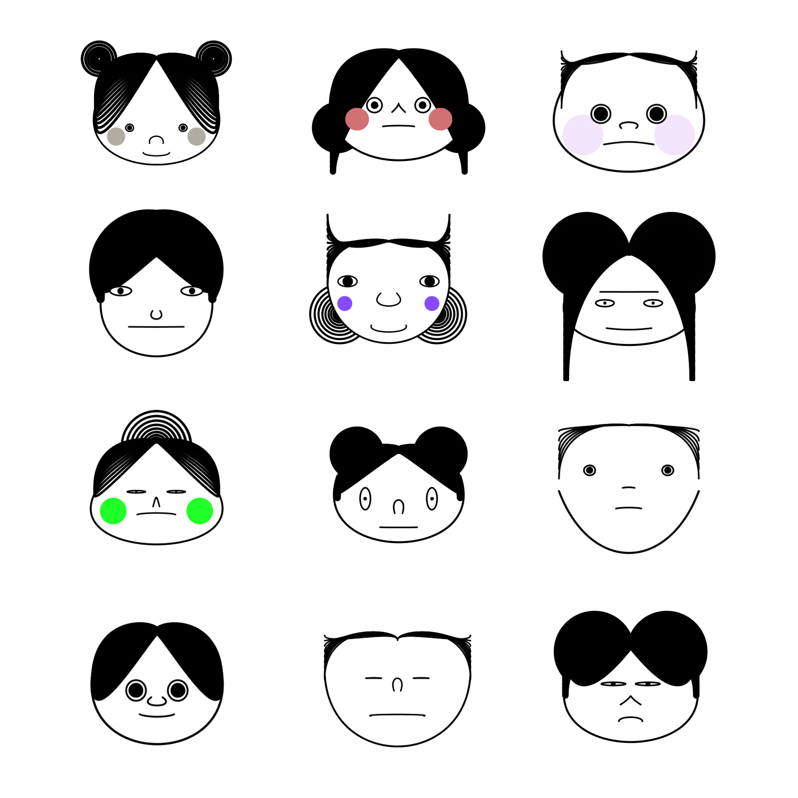
Fig 01. The output of the faces
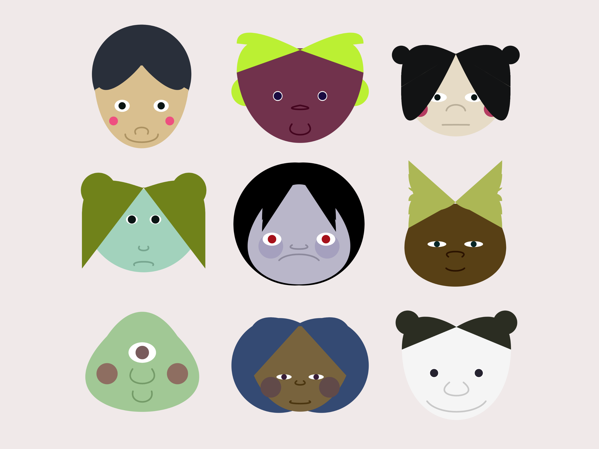
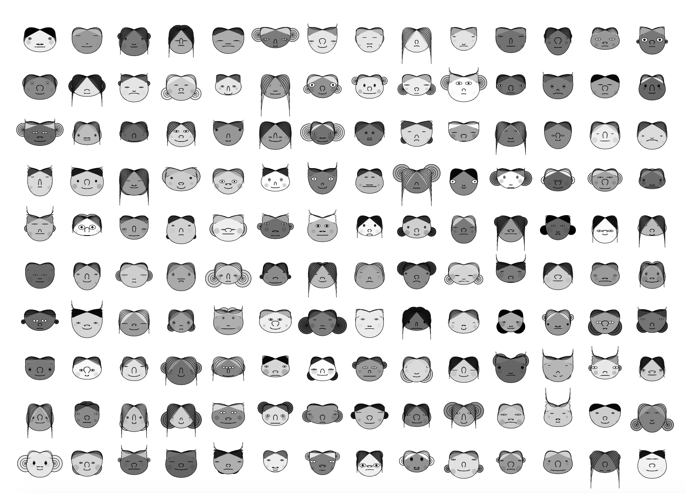
A Raspberry Pi graphics controller
To familiarize myself with DIY hardware, I challenged
myself to design and develop a Visual
Synthesizer. The goal was to explore the potential for playfulness
in an arguably logic-oriented world of computing and robotics. Like a MIDI synthesizer does with
sound
samples, the Visual Synthesizer allows users to
twist knobs and push buttons to adjust the geometric proportions of the default face pictured in
Fig
01.
Bezier curves
Each face is made up of a series of Bezier curves. As someone who isn't good at math, Bezier curves
required a lot of sketching to figure out how to get the curve coordinates just right. This GIF
demonstrates where each of the vertex control points lies on the coordinate plane.
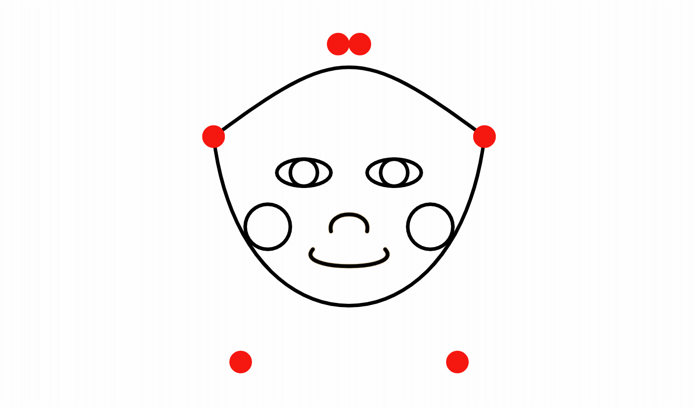
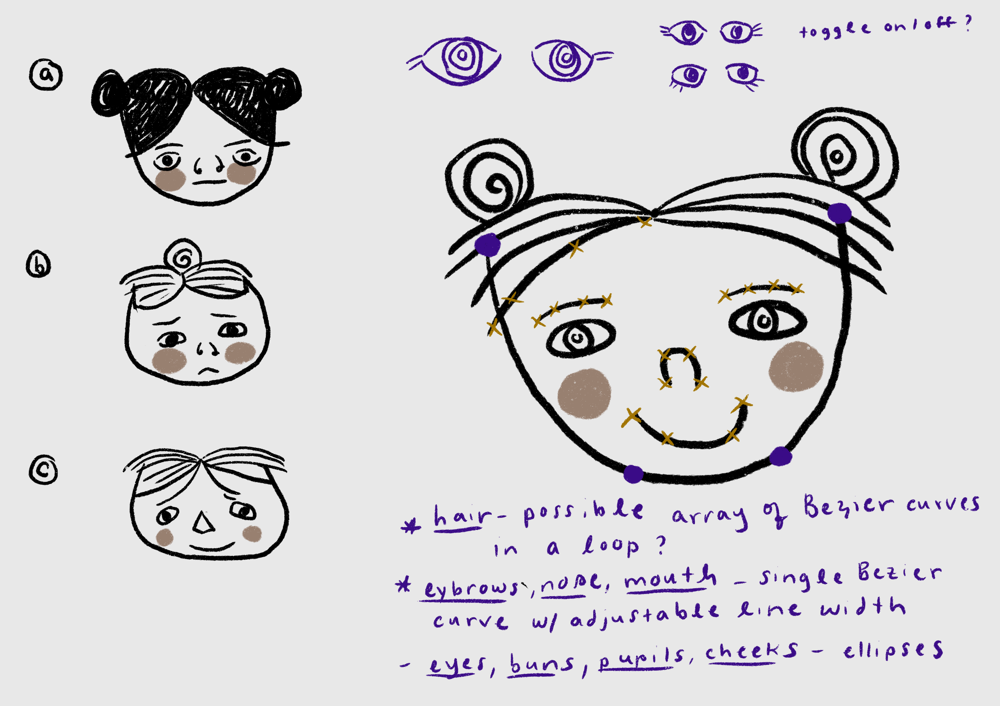
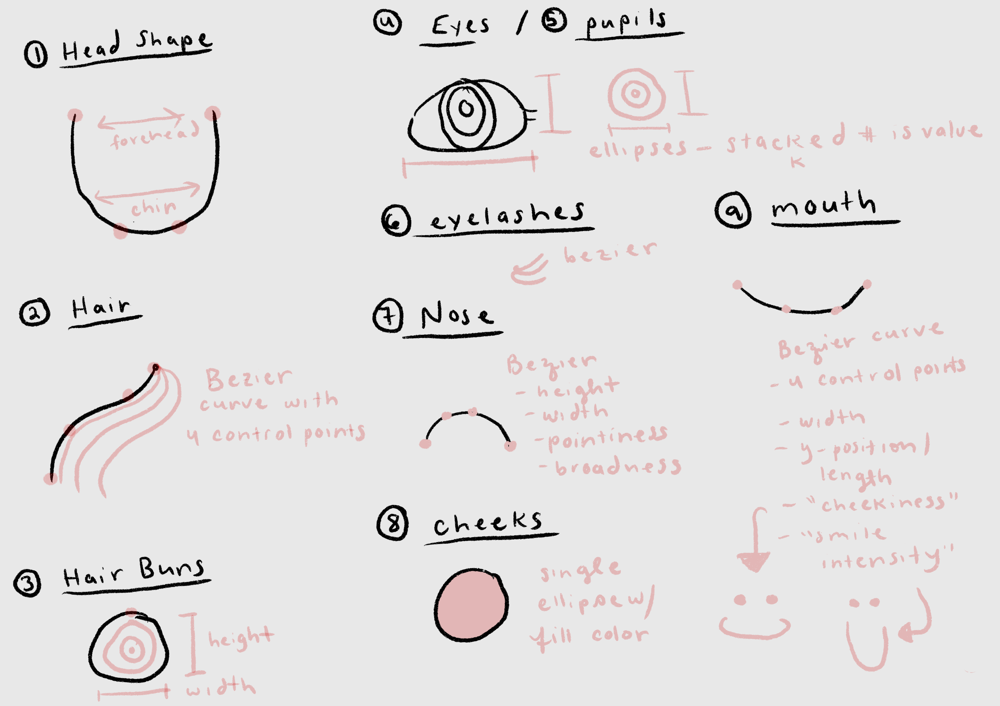
The Problem
Designing a delightful face generator interface
for the mobile web.
When showcasing my project on a creative coding subreddit, I got some feedback that mobile users had
some difficulties with the UI. This is because I implemented the convenient, but notoriously ugly
dat.GUI library to play around with facial proportions. Although its sliders are wonderful for
testing
web graphics on desktop, they don't carry over to a project with mobile aspirations. Without a great
solution available, I decided to build one myself.
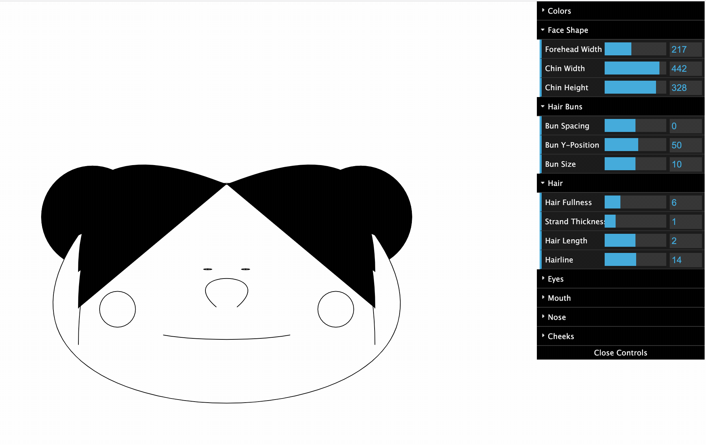
Design Process
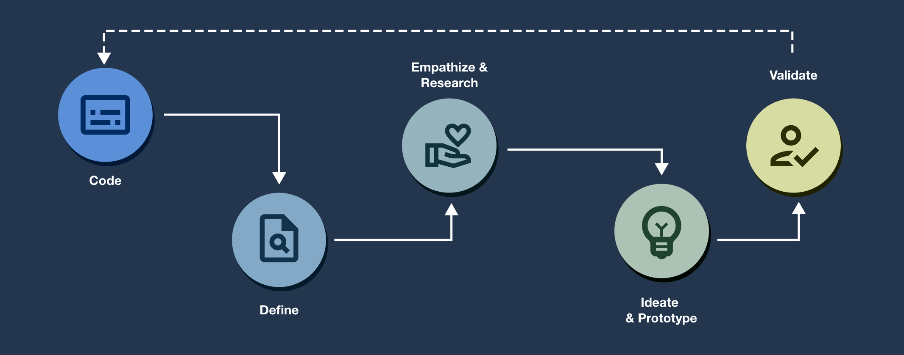
Unfortunately, designing a fun UI solution wasn’t so straightforward. There was no responsive
template that
fit my needs and there weren't many similar web apps available to peruse for inspiration. I
decided
on these three pillars to act as the "north star" for my design decisions:
"Is this fun?"
"Is it satisfying to use?"
"Is it mobile-friendly?"
Early Research
I wanted to design for my target users, even if it meant compromising on favorable aesthetics or my
own design preferences. To understand how people felt about character designers, I relied on a
combination of primary and secondary research.
Discussion Threads
User-Made Content
Video Chatting & Calling
Comparing Nintendo's character designers
Nintendo's Animal Crossing: Pocket Camp (mobile app) and Mii Studio Online (web app)
were good starting
points into my research for a few reasons.
Nintendo is a well-funded company with dedicated UX Designers
These games are popular, so there is a lot of information available online to conduct
preliminary
research
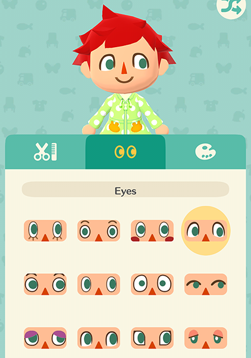
Animal Crossing: Pocket Camp
One of the big draws of Pocket Camp (and the franchise as a whole) is the
slice-of-life feeling it evokes with vibrant graphics and a cutesy aesthetic.
Unfortunately, Animal Crossing games don't focus much on character design, instead focusing on item
collection. Creative freedom is not available out of the box, but curated by collecting a variety of
items that appeal to individual players. Additionally, users must select features from preset
options.
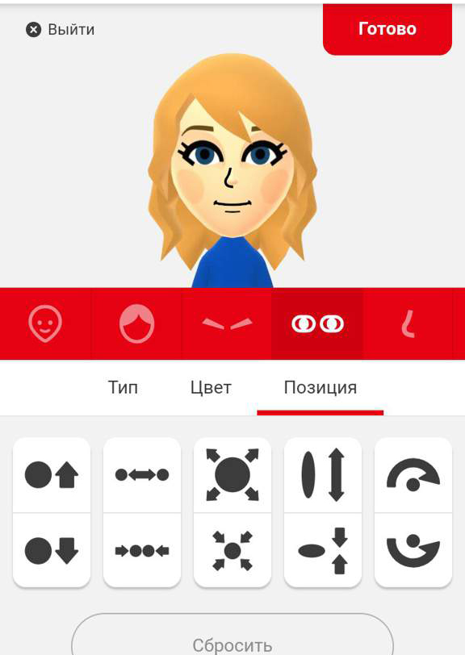
Nintendo Mii Studio Online
Working within the constraints of Nintendo's Mii makers forces users to think creatively to create
unique Miis. Videos and websites sites explaining how to create Miis resembling real people and
fictional characters have thousands of views.
Ideation & Prototyping
After determining my target user base, I started sketching. I had a rough idea of how I
wanted the aesthetic, UI, and basic features to work. Although I was able to pull a lot of inspiration
from Nintendo, I wasn't yet
sure how everything would flow together as an
experience.
When determining the user flow, I first outlined which actions should be the
"primary" actions,
then broke them down from there. I wanted the user journey to be open-ended and flexible, but
with a clear happy path.
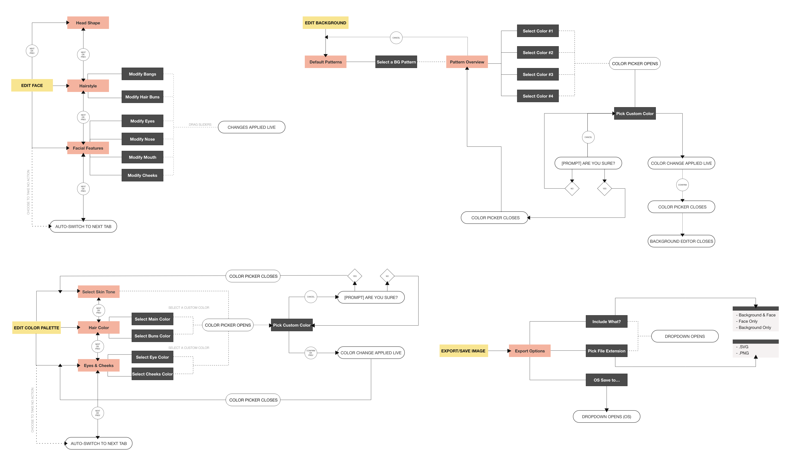
Mid-Fidelity mockups
After determining the feature flow, I put together a few mid-fidelity mockups. I used these mockups to
conduct initial user tests with 6 diverse participants, all of whom had at least some interest in video
games.
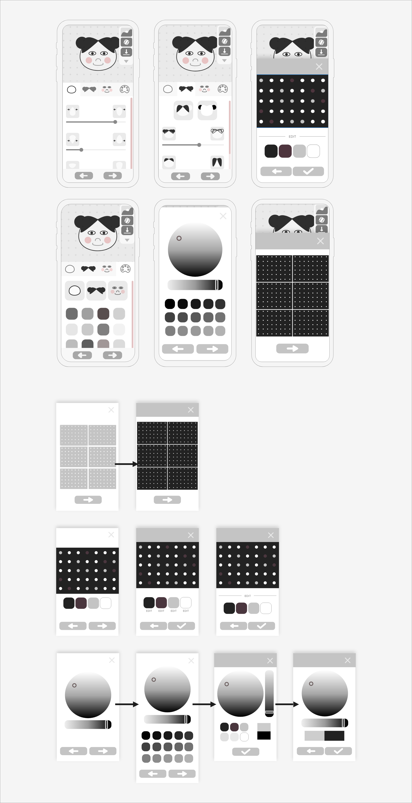
A cool note about iconography
The iconography was pretty easy (and interesting) to create. I found a SVG runtime for p5js enabling me to
open and edit my face creations in Adobe Illustrator.
This cut down the amount of
time it
would take to hand-draw these icons considerably and why they appear so early in the
mid-fidelity mockups.
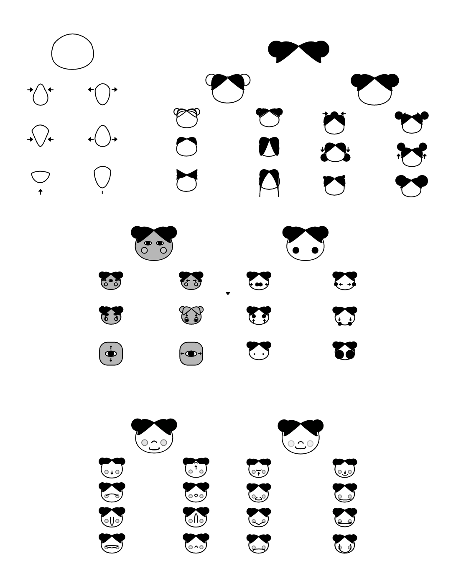
Mid-fidelity testing
After several iterations of low-fidelity testing, participants said the design made sense overall. They felt
good about iconography "instructing" them through the character design process and appreciatedthe
flexibility of the feature flow. However, there were a few features that received mixed/negative feedback.
UI Sliders
I learned that user opinions split about 50/50 on UI sliders. Some users liked them and others
thought they were meh. But, everyone was familiar with them! With this in mind, I created two
initial designs.
Increase/Decrease Buttons
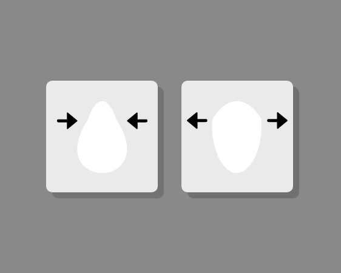
When tapped, the value of the corresponding facial feature will increase or decrease by 1 unit.
When held down, the value will increase or decrease until the user lets go.
Buttons & Sliders
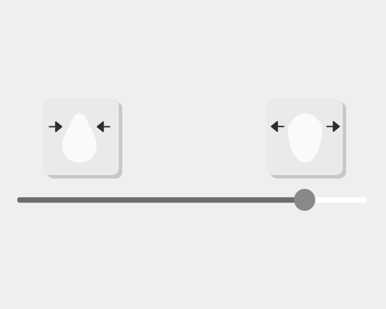
Users use the range slider to select a value. For precision, they can tap the 'increase' and
'decrease' icons until they get the exact value they want.
Chosen Design: Slider Only
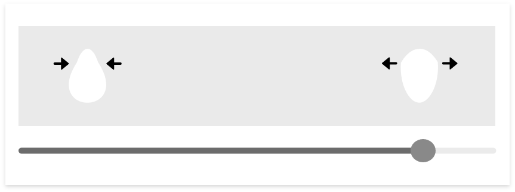
Users preferred sliders over buttons. In fact, after showing users both designs, I realized they
didn't like the buttons at all. When I mentioned that buttons might come in handy for precision’s
sake, one user insisted:
"I really don’t think I'll need the button. I use a smaller slider to
play
around with Instagram filters!”
Background Pattern Editor
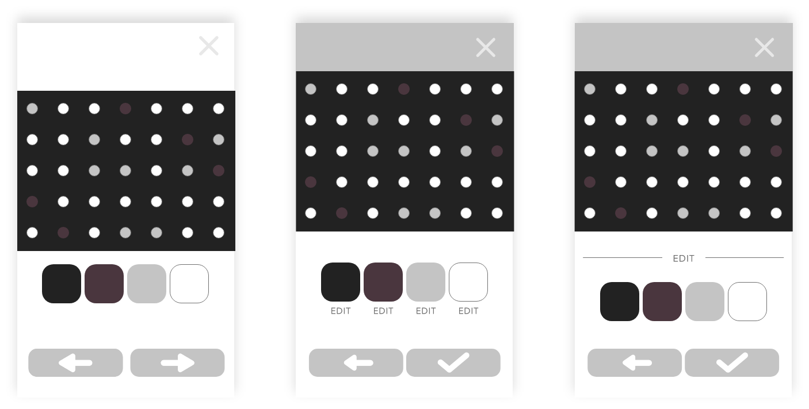
I felt a little stuck here. Common feedback I got about this feature was:
"It’s obvious to me that you should click on the color swatches to
edit
the colors, but it took me a
second to get it. I worry that it might not be obvious to everyone.”
So I created 2 more designs. Ultimately, 5/6 users preferred the original design over my new
iterations. Even though this solution wasn’t perfect, it was learnable. If a user clicks on a color
swatch once,
it quickly becomes obvious what it will do each time.
Color Picker
Most users preferred a minimalist design at the expense of more features. This was surprising to me
because I thought people would prefer having more options as a rule of thumb, but I suppose that is
my developer side.
For example, when I asked one user if she’d be happier with preset color swatches displayed on the
color picker UI, she said:
“I already have something in mind. I don’t need your colors!”
In the end, I cut this UI down to the bare minimum. A horizontal slider for hue, a circular slider
for brightness and saturation, and indication of the current and new colors.
A quick note about the HSB color model
From some research, but mostly personal experience, I found that HSB can be more useful than RGB
for choosing colors.
It’s especially useful in selecting and modifying skin tones. If you want to give someone a
darker skin tone, all you have to do is turn the brightness level down. Sunburn? Turn up the
saturation. Wanna make an alien? Change the hue to blue or green.
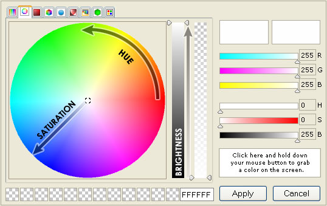
Mini Style Guide
I wanted the UI to appeal to users motivated by creativity and whimsical aesthetics. Many of these users grew
up with technology. Generally, this user base seems to be prone to nostalgia, identifies closely with the
media they enjoyed in childhood, and derive pleasure from curating a personal identity online. I drew
aesthetic inspiration from lighthearted video games and bullet journals. The style guide embodies a
minimal, flat aesthetic with quirky, colorful graphics and patterns.
Regarding iconography, I found most users don't like wordy labels attached to sliders. It's also really hard
to name sliders in a user-friendly way. They preferred seeing straightforward visuals
describing what they are doing. I wanted the iconography to be instructional and consistent without being
distracting. These icons describe what each slider does by illustrating the minimum and maximum values of
the
range it represents.